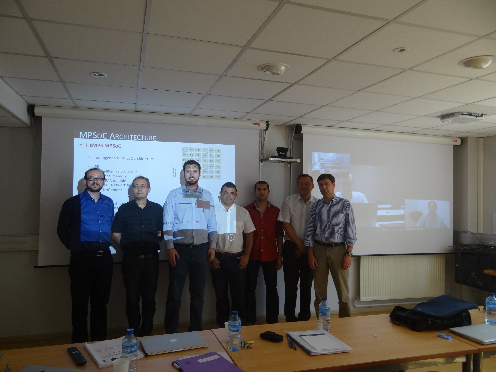

My Thesis
Synthèse Topologique de Macro-Cellules en Technologie CMOS
LIRMM, France, 1994
Advisors: Michel Robert / Daniel Auvergne
Advised Thesis
| 18 |
Securing Applications in NoC-based Many-Core Systems: A Comprehensive Methodology
Rafael Follmann Faccenda PPGCC-PUCRS (tese PPGCC nº 168), 12/03/2024 Advisor: Fernando Gehm Moraes Coadvisor: Luciano Caimi |
|
|---|---|---|
| 17 |

|
Enhancing Lifetime Reliability of Manycore Systems Through Reinforcement Learning-Based Task Management
Iaçanã Ianiski Weber PPGCC-PUCRS (tese PPGCC nº 167), 05/03/2024 Advisor: Fernando Gehm Moraes |
| 16 |
Curbing the Design Complexity of Asynchronous Circuits
Marcos Luiggi Lemos Sartori PPGCC-PUCRS (tese PPGCC nº 165), 05/09/2023 Advisor: Fernando Gehm Moraes (Ney Laert Vilar Calazans -2019-2022) |
|
| 15 |
A Framework for Fast Architecture Exploration of Convolutional Neural Network Accelerators
Leonardo Rezende Juracy PPGCC-PUCRS (tese PPGCC nº 149), 05/08/2022 Advisor: Fernando Gehm Moraes (Co-advisor: Prof. Matheus Trevisan Moreira) |
|
| 14 |
Dynamic Thermal Management For Noc-based Many-core Systems
Alzemiro Henrique Lucas da Silva PPGCC-PUCRS (tese PPGCC nº 139), 12/08/2021 Advisor: Fernando Gehm Moraes (Co-advisor: Prof. André Luis Del Mestre Martins) |
|
| 13 |
Secure Admission and Execution of Applications in NoC-based Many-cores Systems
Luciano Lores Caimi PPGCC-PUCRS (tese PPGCC nº 116), 13/09/2019 Advisor: Fernando Gehm Moraes |
|
| 12 |
Fault-tolerance at tthe Management Level in Many-core Systems
Vinicius Morais Fochi PPGCC-PUCRS (tese PPGCC nº 117), 23/08/2019 Advisor: Fernando Gehm Moraes |
|
| 11 |

|
Multi-objective Resource Management For Many-core Systems
André Luis Del Mestre Martins PPGCC-PUCRS (tese PPGCC nº 92), 19/03/2018 Advisor: Fernando Gehm Moraes |
| 10 |

|
Self-adaptive QoS at Communication and Computations Levels for Many-core System-on-Chip
Marcelo Ruaro PPGCC-PUCRS (tese PPGCC nº 91), 16/03/2018 Advisor: Fernando Gehm Moraes |
| 9 |
Gerenciamento Térmico e Energético em MPSOCS
Guilherme Machado de Castilhos PPGCC-PUCRS (tese PPGCC nº 81), 10/08/2017 Advisor: Fernando Gehm Moraes |
|
| 8 |
Adequação de Modelos Arquiteturais para Aplicações Tempo-real em Sistemas Many-core
Guilherme Afonso Madalozzo PPGCC-PUCRS (tese PPGCC nº 71), 12/01/2017 Advisor: Fernando Gehm Moraes |
|
| 7 |  |
Exploration of Runtime Distributed Mapping Techniques for Emerging Large Scale MPSoCs
Marcelo Grandi Mandelli PPGCC-PUCRS (tese PPGCC nº 55), 13/07/2015 Advisor: Fernando Gehm Moraes / Co-advisor: Luciano Copello Ost Tese em Cotutela com a França - LIRMM |
| 6 |
Layered Approach for Runtime Fault Recovery in Noc-Based MPSoCs
Eduardo Weber Wächter PPGCC-PUCRS (tese PPGCC nº 54), 10/06/2015 Advisor: Fernando Gehm Moraes / Co-advisor: Alexandre de Morais Amory |
|
| 5 |

|
Mecanismo de Controle de QoS através de DFS em MPSoCs
Guilherme Montez Guindani PPGCC-PUCRS (tese PPGCC nº 44), 14/07/2014 Advisor: Fernando Gehm Moraes |
| 4 |

|
Serviços de Comunicação Diferenciados em Sistemas Multiprocessados em Chip Baseados em Redes Intra-Chip
Everton Alceu Carara PPGCC-PUCRS (tese PPGCC nº 22), 25/08/2011 Advisor: Fernando Gehm Moraes |
| 3 |

|
Abstract Models of NoC-Based MPSoCs for Design Space Exploration
Luciano Copello Ost PPGCC-PUCRS (tese PPGCC nº 13), 13/05/2010 Advisor: Fernando Gehm Moraes |
| 2 |
Monitoração e Roteamento Adaptativo Para Fluxos QoS em NoCs
Leonel Pablo Tedeso PPGCC-PUCRS (tese PPGCC nº 12), 12/05/2010 Advisor: Fernando Gehm Moraes |
|
| 1 |
Mapeamento Dinâmico de Tarefas em MPSoCs Heterogêneos baseados em NoC
Ewerson Luiz de Souza Carvalho PPGCC-PUCRS (tese PPGCC nº 2), 10/03/2009 Advisor: Fernando Gehm Moraes |
|
{kind=link}
{kind=link}
{kind=link}
{kind=link}
{kind=link}
{kind=link}
{kind=link}
{kind=link}
{kind=link}
{kind=link}
Co-advised Thesis
| 3 |

|
Reduzindo o Consumo de Potência em Networks-on-Chip através de Esquemas de Codificação de Dados
José Carlos Sant’Anna Palma PPGC-UFRGS, 2007 Advisor: Ricardo Augusto da Luz Reis / Co-advisor: Fernando Gehm Moraes |
|---|---|---|
| 2 |
Test Logic and Scheduling for Testing Mesh-Based Best-Effort Networks-on-Chip
Alexandre de Morais Amory PPGC-UFRGS, 2007 Advisor: Marcelo Lubaszewski / Co-advisor: Fernando Gehm Moraes |
|
| 1 |
Uma Metodologia para o Desenvolvimento de Aplicações de Visão Computacional Utilizando Projeto Conjunto de Hardware e Software
Rolf Fredi Molz PPGC-UFRGS, 2001 Advisor: Paulo Engel / Co-advisor: Fernando Gehm Moraes |
|